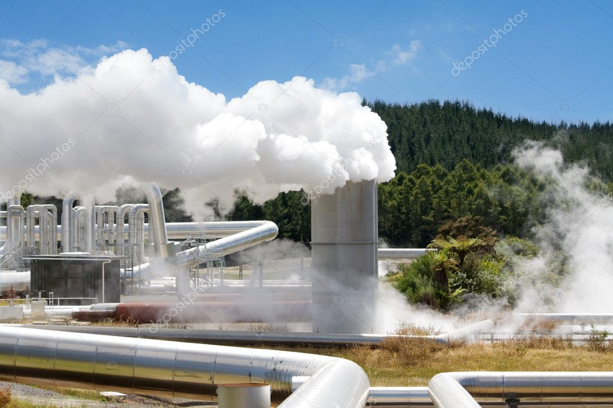
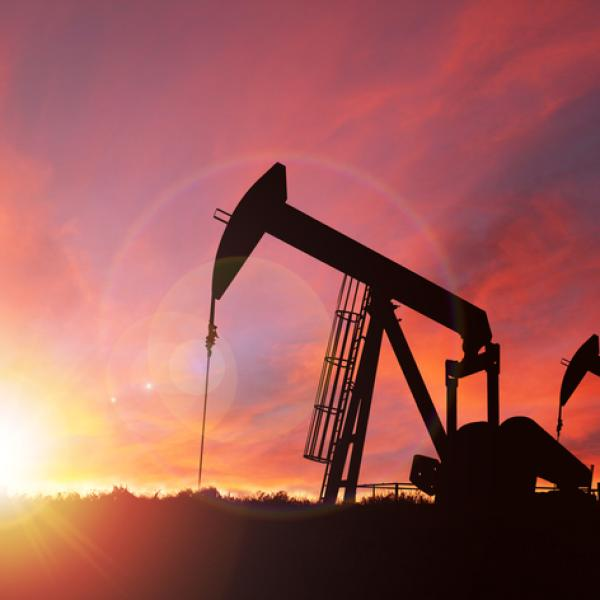
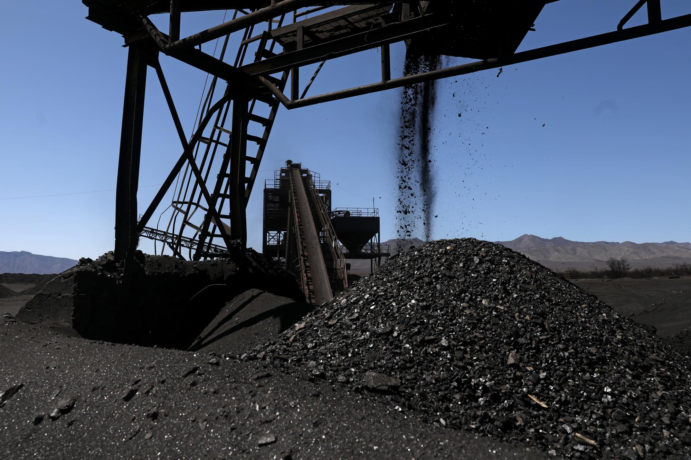
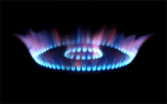
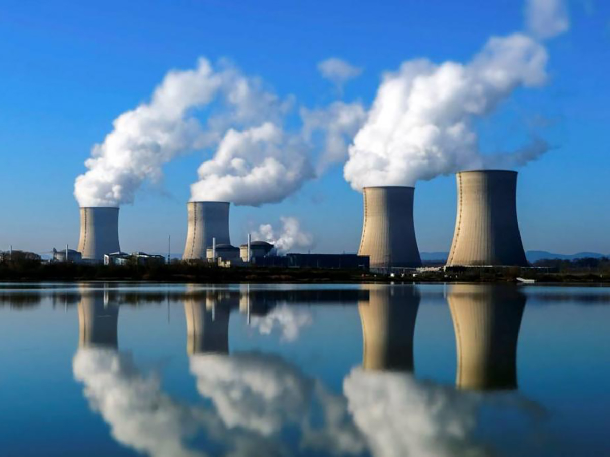

La energía renovable proviene de recursos naturales que nunca se acaban, como el sol, el viento, el agua y el
calor de la Tierra. A diferencia del petróleo y el carbón, que son limitados y contaminan, las energías
renovables son infinitas y limpias.
Por ejemplo, la energía solar se obtiene capturando la luz del sol con paneles solares. La energía eólica
utiliza el viento mediante grandes molinos para generar electricidad. La energía hidroeléctrica aprovecha la
fuerza del agua en ríos y embalses, y la geotérmica utiliza el calor que proviene del interior de la Tierra.
Estas fuentes de energía son esenciales para combatir el cambio climático porque no producen gases
contaminantes. Además, ayudan a reducir nuestra dependencia de los combustibles fósiles, promoviendo un uso más
variado y seguro de la energía.
La energía renovable es clave para proteger el medio ambiente y asegurar un futuro más limpio y
sostenible para todos. Adoptar estas fuentes de energía nos permite cuidar nuestro planeta y disfrutar de sus
beneficios sin dañarlo.
Energía solar
La energía solar es una forma de energía renovable que se obtiene a partir de la radiación solar. Se aprovecha
mediante tecnologías como los paneles fotovoltaicos y los colectores solares térmicos para generar electricidad
o calor. Esta fuente de energía es abundante y disponible en todo el planeta, lo que la convierte en una
alternativa viable y sostenible a los combustibles fósiles.
Ventajas
Sostenibilidad y renovabilidad
La energía solar es una fuente inagotable de energía, ya que el sol
seguirá brillando durante miles de millones de años. A diferencia de los combustibles fósiles, no se agota
con el uso y no contribuye al agotamiento de recursos naturales.
Impacto ambiental reducido
La generación de energía solar no produce emisiones de gases de efecto invernadero ni contaminantes
atmosféricos, lo que ayuda a combatir el cambio climático y a reducir la contaminación del aire. Además, no
requiere extracción de recursos ni actividades mineras, lo que disminuye el impacto ambiental asociado.
Costos a largo plazo
Aunque la instalación inicial de sistemas solares puede ser costosa, los costos operativos son muy bajos
debido a la ausencia de combustible y al mínimo mantenimiento requerido. Además, con el avance de la
tecnología y la economía de escala, el costo de los paneles solares ha disminuido considerablemente,
haciendo que la energía solar sea cada vez más accesible y económica a largo plazo.
Energía eólica
La energía eólica es una forma de generación de energía renovable que aprovecha la fuerza del viento para
producir electricidad. Se basa en la conversión de la energía cinética del viento en energía mecánica mediante
aerogeneradores, que luego se transforma en energía eléctrica a través de un generador.
Ventajas
Renovable y Limpia
Una de las principales ventajas de la energía eólica es que es una fuente de energía renovable e inagotable.
No produce emisiones de gases de efecto invernadero ni contaminantes atmosféricos durante su operación, lo
que contribuye a la reducción del impacto ambiental y a la lucha contra el cambio climático.
Bajo Costo de Operación y Mantenimiento
En comparación con otras formas de generación de energía, como la energía nuclear o la energía a base de
combustibles fósiles, la energía eólica tiene costos de operación y mantenimiento relativamente bajos una
vez que los aerogeneradores están instalados. Esto la hace económicamente atractiva a largo plazo y puede
ayudar a estabilizar los precios de la electricidad.
Aprovechamiento de Recursos Locales
La energía eólica puede ser aprovechada en una amplia variedad de ubicaciones, desde áreas costeras hasta
terrenos montañosos o incluso en alta mar. Esto permite que las comunidades utilicen sus propios recursos
naturales para producir electricidad, lo que puede aumentar la seguridad energética y reducir la dependencia
de los combustibles fósiles importados. Además, el uso de la energía eólica puede impulsar el desarrollo
económico local, especialmente en regiones rurales donde se pueden instalar parques eólicos.
Energía hidroeléctrica
La energía solar es una forma de energía renovable que se obtiene a partir de la radiación solar. Se aprovecha
mediante tecnologías como los paneles fotovoltaicos y los colectores solares térmicos para generar electricidad
o calor. Esta fuente de energía es abundante y disponible en todo el planeta, lo que la convierte en una
alternativa viable y sostenible a los combustibles fósiles.
Ventajas
Renovable y limpia
La energía hidroeléctrica es renovable, ya que aprovecha el ciclo natural del agua, como la lluvia y el
derretimiento de nieve. Además, es una fuente de energía limpia, ya que no produce emisiones de gases de
efecto invernadero ni contamina el aire.
Control de inundaciones
Las represas hidroeléctricas pueden regular el flujo de agua en ríos, lo que ayuda a prevenir inundaciones
en áreas propensas a estos desastres naturales. Esto brinda seguridad a las comunidades cercanas y reduce
los riesgos asociados con las crecidas repentinas.
Almacenamiento de energía
A Las represas pueden actuar como enormes baterías naturales al almacenar agua en períodos de baja demanda y
liberarla cuando la demanda de electricidad es alta. Este almacenamiento permite una gestión más eficiente
de la energía y ayuda a estabilizar la red eléctrica, contribuyendo así a la seguridad energética.
Energía geotérmica
La energía geotérmica es una forma de energía renovable que aprovecha el calor del interior de la Tierra para
generar electricidad o proporcionar calefacción y refrigeración. Se basa en la utilización del calor almacenado
en el subsuelo, que puede ser accesible a través de pozos de perforación, para impulsar turbinas de generación
eléctrica o sistemas de calefacción directa.

Ventajas
Sostenibilidad
La energía geotérmica es una fuente de energía renovable que aprovecha el calor natural del núcleo
terrestre, lo que significa que es virtualmente inagotable a escala humana. A diferencia de los combustibles
fósiles, no produce emisiones de gases de efecto invernadero ni contribuye al cambio climático.
Disponibilidad constante
A diferencia de otras fuentes de energía renovable, como la solar o la eólica, la energía geotérmica está
disponible las 24 horas del día, los 7 días de la semana, ya que no depende de las condiciones climáticas
externas. Esto la hace una opción fiable para la generación de electricidad y calefacción durante todo el
año.
Eficiencia energética
Los sistemas geotérmicos pueden ser altamente eficientes, ya que aprovechan directamente el calor natural de
la Tierra sin necesidad de procesos de combustión. Esto significa que pueden alcanzar rendimientos
superiores a los sistemas convencionales de generación eléctrica o calefacción, lo que resulta en un menor
consumo de recursos y costos operativos más bajos a largo plazo.
Biomasa
La biomasa se refiere a la materia orgánica renovable que puede ser utilizada como fuente de energía. Esta
materia orgánica puede incluir residuos agrícolas, forestales, industriales y urbanos, así como cultivos
energéticos específicamente cultivados.
Ventajas
Renovabilidad
La biomasa proviene de fuentes orgánicas que pueden ser replantadas o regeneradas, lo que la convierte en
una fuente de energía renovable. A diferencia de los combustibles fósiles, cuya extracción y consumo son
finitos y contribuyen al cambio climático, la biomasa puede ser producida de manera sostenible.
Reducción de residuos
Utilizar biomasa para la producción de energía puede ayudar a reducir la cantidad de residuos orgánicos que
de otra manera podrían terminar en vertederos, donde podrían contribuir a la contaminación del suelo y del
agua. La conversión de estos residuos en energía aprovecha su valor potencial y reduce la necesidad de
depósitos de desechos.
Bajo impacto ambiental
Aunque la combustión de biomasa emite gases de efecto invernadero, su impacto neto puede ser neutral o
incluso positivo si se gestionan adecuadamente los ciclos de carbono. Además, la biomasa puede producirse de
manera más limpia que los combustibles fósiles cuando se utilizan tecnologías de conversión avanzadas, como
la gasificación o la pirolisis, que minimizan las emisiones nocivas. Esto puede ayudar a reducir la
dependencia de los combustibles fósiles y mitigar el cambio climático.
Energía No Renovable
Concepto
La energía no renovable es aquella que proviene de recursos naturales que no se reponen a una velocidad
significativa en comparación con la tasa a la que son consumidos. Estos recursos, como el petróleo, el carbón y
el gas natural, se formaron a lo largo de millones de años a partir de materia orgánica enterrada y sometida a
presiones y temperaturas extremas en la Tierra. Sin embargo, una vez extraídos y utilizados para generar energía, no pueden
ser fácilmente reemplazados en un corto período de tiempo.
El problema con la dependencia de la energía no renovable radica en varios aspectos. Primero, estos recursos son
finitos, lo que significa que eventualmente se agotarán si se utilizan continuamente sin una alternativa viable.
Segundo, la extracción y el uso de estos recursos pueden tener impactos ambientales significativos, como la
contaminación del aire, del agua y del suelo, así como la degradación del paisaje debido a la minería y la
perforación. Además, la quema de combustibles fósiles para obtener energía es una de las principales causas del
cambio climático, ya que libera grandes cantidades de dióxido de carbono y otros gases de efecto invernadero a la
atmósfera, lo que contribuye al calentamiento global y sus consecuencias asociadas, como el aumento de las temperaturas, el
derretimiento de los casquetes polares y la acidificación de los océanos.
Petroleo
El petróleo es un recurso natural que tarda millones de años en formarse a partir de materia orgánica en el
fondo del mar y bajo tierra. Lo extraemos perforando pozos, ya sea en tierra firme o en el mar. Es una fuente de
energía muy importante porque se puede convertir en gasolina, diesel y otros productos que usamos en nuestra vida
diaria, como plásticos, medicamentos y fertilizantes.
Aunque el petróleo nos ha dado muchos beneficios, también tiene desventajas. Su extracción y uso pueden causar
contaminación del aire, agua y suelo, y contribuye al calentamiento global. Además, a menudo hay conflictos y
tensiones geopolíticas asociadas con su producción y distribución en todo el mundo. Por eso, es importante
buscar otras formas de energía más limpias y sostenibles para el futuro.

Ventajas
Alta densidad energética
El petróleo contiene una gran cantidad de energía por unidad de volumen, lo que lo hace eficiente en
términos de transporte y almacenamiento.
Flexibilidad
Los productos derivados del petróleo, como la gasolina y el diesel, son fácilmente transportables y pueden
utilizarse en una amplia gama de vehículos y maquinaria, lo que los hace convenientes para diversas
necesidades de transporte.
Amplia disponibilidad
Aunque las reservas de petróleo son finitas, todavía hay grandes cantidades disponibles en todo el mundo, lo
que garantiza un suministro a largo plazo.
Carbón
Se forma a partir de la descomposición de materia vegetal en condiciones anaeróbicas. El carbón se extrae
principalmente a través de la minería y se utiliza ampliamente en la generación de electricidad, la producción
de acero y la calefacción.

Ventajas
Infraestructura establecida
Existe una infraestructura bien desarrollada para la extracción, transporte y procesamiento del carbono, lo
que facilita su utilización en diversas aplicaciones industriales, comerciales y residenciales.
Costo relativo
En muchas regiones, el carbono sigue siendo una fuente de energía relativamente económica en comparación con
otras opciones, lo que lo hace atractivo para sectores que requieren grandes cantidades de energía, como la
generación de electricidad y la industria pesada.
Almacenamiento eficiente
El carbón y el gas natural son fáciles de almacenar y transportar, lo que los hace adecuados para su uso en
plantas de energía y aplicaciones industriales donde se necesita un suministro constante y confiable de
energía.
Gas natural
El gas natural es un recurso fósil que se encuentra en depósitos subterráneos y se extrae mediante perforaciones
en la tierra. A diferencia de las fuentes de energía renovable, como la solar o la eólica, el gas natural no se
repone de manera rápida o significativa en un período corto de tiempo en términos humanos. Este proceso de formación
del gas natural lleva millones de años y, por lo tanto, se considera una fuente no renovable de energía.
Aunque existen reservas considerables de gas natural en diversas partes del mundo, una vez que se extrae y se
consume, no se regenera de manera rápida o natural. Por lo tanto, su disponibilidad futura depende de la
exploración y el desarrollo continuos de nuevos yacimientos, lo que a menudo implica costos y esfuerzos significativos.

Ventajas
Menos emisiones contaminantes
En comparación con otros combustibles fósiles como el carbón y el petróleo, el gas natural produce menos
emisiones de contaminantes atmosféricos nocivos como dióxido de azufre (SO2) y óxidos de nitrógeno (NOx),
así como menos partículas sólidas. Esto contribuye a una mejor calidad del aire y ayuda a reducir los impactos
negativos en la salud humana y el medio ambiente.
Mayor eficiencia energética
El gas natural es altamente eficiente en términos de conversión de energía. Las tecnologías de generación de
energía que utilizan gas natural, como las centrales eléctricas de ciclo combinado, pueden alcanzar
eficiencias de conversión mucho mayores en comparación con las plantas que queman carbón o petróleo, lo que resulta en
un menor consumo de combustible y menores costos operativos.
Menor emisión de dióxido de carbono (CO2)
Aunque el gas natural es un combustible fósil y produce emisiones de CO2 cuando se quema, su
contenido de carbono es más bajo en comparación con el carbón y el petróleo. Como resultado, la combustión de gas natural
emite menos CO2 por unidad de energía generada, lo que lo convierte en una opción más limpia en términos de
emisiones de gases de efecto invernadero.
Energía nuclear
La energía nuclear es una forma de producir electricidad utilizando la energía liberada por la división de
átomos pesados como el uranio. Esta energía se utiliza para calentar agua y producir vapor, que luego hace girar
turbinas conectadas a generadores que producen electricidad.

Ventajas
Estabilidad en el suministro
Las centrales nucleares pueden operar de manera continua y confiable durante largos períodos de tiempo, lo
que proporciona una fuente constante de electricidad sin depender de factores climáticos como el viento o la luz
solar.
Alta densidad energética
La energía nuclear tiene una alta densidad energética, lo que significa que una pequeña cantidad de
combustible nuclear puede producir grandes cantidades de electricidad en comparación con otras fuentes de energía.
Independencia energética
La producción de energía nuclear puede reducir la dependencia de los países de los combustibles fósiles
importados, lo que aumenta la seguridad energética y reduce la vulnerabilidad a las fluctuaciones en los
precios del petróleo y el gas natural